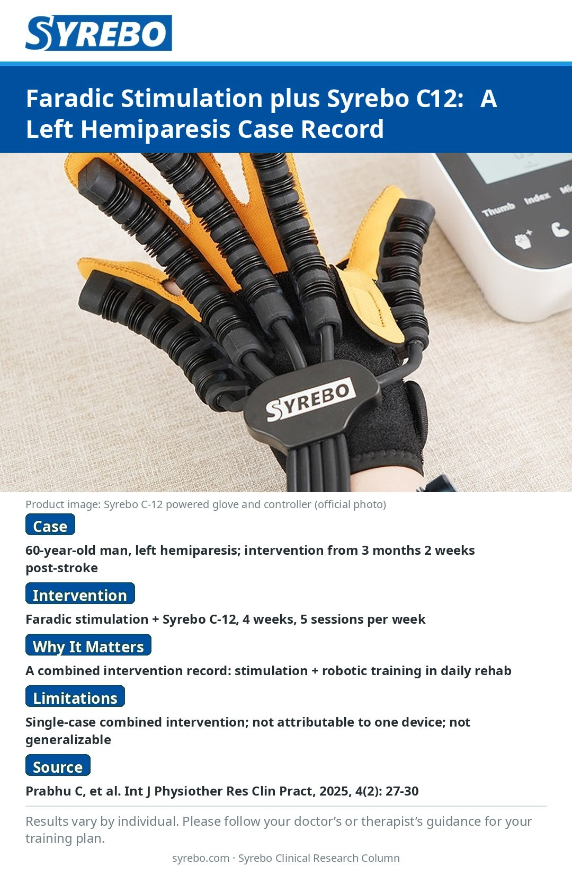

Issue 09 · Image version
Faradic Stimulation Combined with Syrebo C12: A 4-Week Record of One Patient with Left Hemiparesis

Source: Prabhu C, Mohan P, Sajjana D. Rehabilitation of Left-Sided Hemiparesis Post-MCA Infarction Using Faradic Electrical Stimulation and Robotic Hand Rehabilitation: A Case Report. International Journal of Physiotherapy Research and Clinical Practice, 2025, 4(2): 27-30.
Source pageStudy limitations: Single-case combined intervention; changes cannot be attributed to one device alone, and results are not generalizable.
Note: Rehabilitation outcomes vary by individual. Please follow the training plan prescribed by your physician or therapist.
Read the articleChinese version